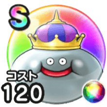

メタルキング
メタルキングコインスペシャルウォークDAY戦闘開始時たまに誰よりも先に行動できるこころ最大コスト+4スキルの斬撃・体技ダメージ+10%じゅもんダメージ+10%スキルHP回復効果+10%全属性耐性+10% / 9.0点
くわしい特徴
【ランク特殊効果】 戦闘開始時たまに誰よりも先に行動できるこころ最大コスト+4スキルの斬撃・体技ダメージ+10%じゅもんダメージ+10%スキルHP回復効果+10%全属性耐性+10%

メタルキングコインスペシャルウォークDAY戦闘開始時たまに誰よりも先に行動できるこころ最大コスト+4スキルの斬撃・体技ダメージ+10%じゅもんダメージ+10%スキルHP回復効果+10%全属性耐性+10% / 9.0点
【ランク特殊効果】 戦闘開始時たまに誰よりも先に行動できるこころ最大コスト+4スキルの斬撃・体技ダメージ+10%じゅもんダメージ+10%スキルHP回復効果+10%全属性耐性+10%